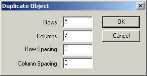

There is no reciept how you should display your board as there are many possobilities. Here is a few examples:
1 active object = 1 brick
Most logically you can have a single active object to represent one brick in the board.
For this its a good idea to turn on "Move fixed with bricks".
When you create a new brick, you store the brick type into the desired position and set the fixed value in the board to your new bricks fixed value. Then you can select out the object later on when doing object searches.
You can now choose to use the easy way to position the bricks by using the "Easy grid features -> Position bricks to grid" feature. AGBO will then position all the active objects to the easy grid board. It uses the fixed values of the active objects to position them so you have to remember storing the fixed values of the bricks into AGBO. Also if you move any object, you need to turn "Move fixed with bricks" ON as well, or your bricks will never move.
You can also chose to position the objects manually using the "On brick moved" conditions (you need to turn this on)
When that condition is triggered, you can get the fixed value of the active object that has been moved. You can use an event like this:
- On brick moved
- Fixed value of "active" = MovedFixed( "Advanced Game Board" )
---> Set new position of the brick to its new coordinates. (you can get those from AGBO as well)
1 active object represents 1 'slot' in the board
For simple board games, its easiest to use just as many actives as your board is big. Just duplicate the active objects that is going to represent your board to the size of your board like this:

As shown above, i'm now making a "board" of active objects with the width 7 and the height 5. (MMF shows, for some odd reason, how many rows you want to make as the first edit field. Rows = vertical height. Columns = horizontal width)
So how do we make our board of active objects display whats going on in the Advanced Game board Object?
We can do this in various ways. AGBO has a special feature so you can assign a fixed value of our active object to a brick slot somewhere in AGBO. You can manually with the "Set fixed value of brick" action, store a fixed value into a position on the board. This way we can later as we have now "linked" our active object to that position in the game board. There is also a faster way if you used the "Duplicate" method i explained above. Use the action "Import actives for board" to make AGBO automatically take your bricks and link them to the correct brick in the board. Just keep in mind that your visual board and the internal board in AGBO must have the same size or you would get interesting bugs.
We are now one step further in displaying whats going on in the AGBO board.
For the next section I'm assuming that your different bricks is stored in another direction of your object.
We can then (if we are lazy and doesn't mind much the speed of our game) use the expressions in the "Search board" submenu. Then we can in an always event (or for better speeds, use the "every - , -" conditions from the timer object) set the current direction of our object to:
FindBrickfromFixed( "Advanced Game Board", Fixed( "Active" ) )
Due to the way MMF works, it will do that fo all of our objects and we now have a grapical presentation of whats going on in the board. In our active object, direction 0 would be pure white (to simulate that its not there) and direction 1 could be a red brick and direction 2 could be blue and so on...)
Now this would be a really crappy solution as we there make AGBO search through the board 50 times each second for the fixed value of our active and then return the brick type. To make it much more efficient, we simply do this at the very beginning of the level (after you have imported your actives into the board)
and store the actives X and Y position from the AGBO board into two alterable values of our active object. For example store the X position of our active object (AGBO/array coordinates, not real coordinates) into Alterable value A and Y position into Alterable value B. You could rename the alterable values just to make your code easier to understand.
Now we almost do the same as before but here we doesn't need to seach for the active objects position in the AGBO board since we allready stored them into the alterable values from the beginning. Now our event could look like this:
Always: Set direction of "Active" to BrickAt( "Advanced Game Board", Alterable Value A( "Active" ), Alterable Value B( "Active" ) )
And we can now do everything we want in AGBO and our actives will always display the changes we make in AGBO.